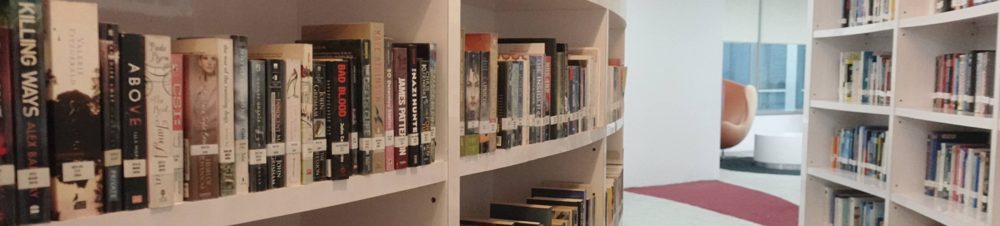
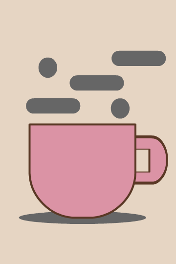
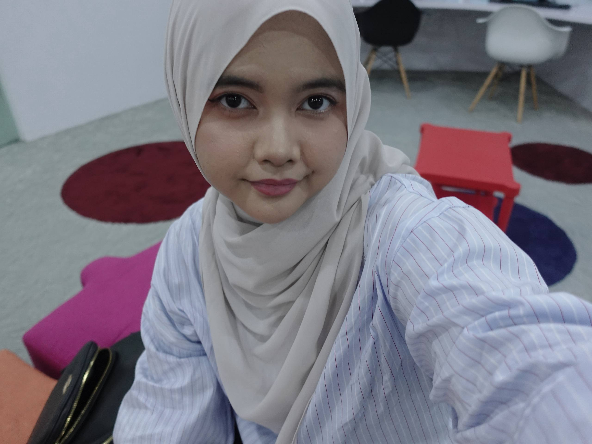
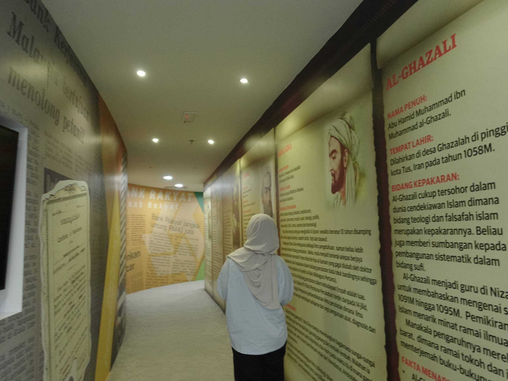
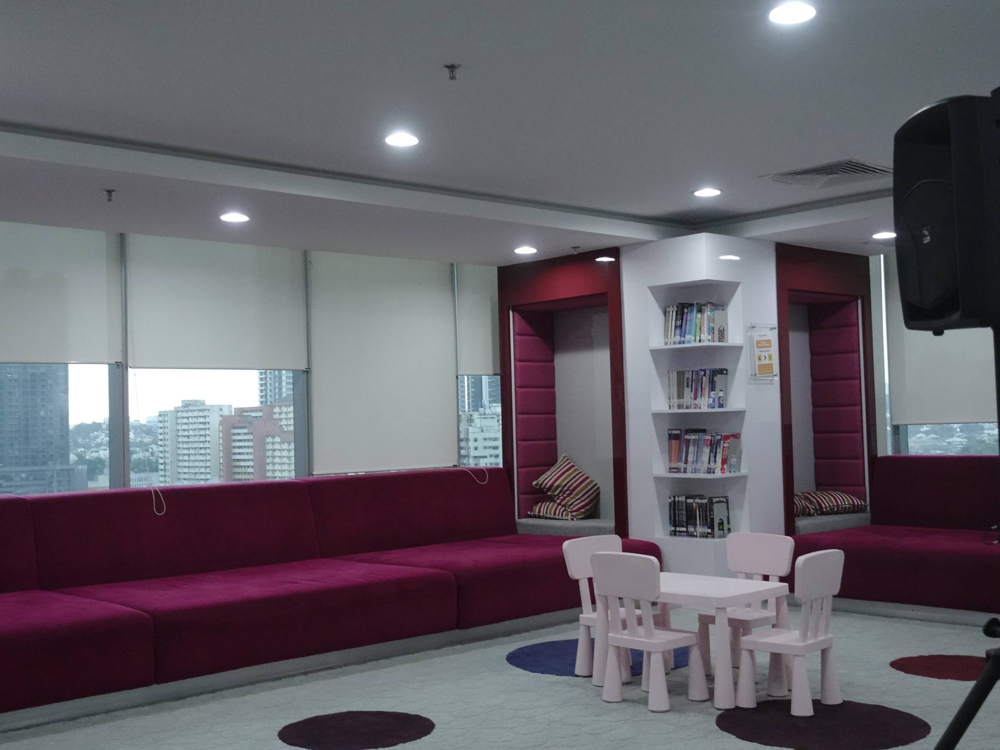

|
A peaceful escape in the middle of Kuala Lumpur
I was supposed to visit another library, but heavy rain suddenly forced me to change my route since I was travelling by public transportation T_T. While looking for a nearby place, I came across library at Bank Rakyat. I was genuinely surprised because I didn't know there was a library there. Sometimes, the best discoveries happen when things don't go according to plan hihi. First Impression
The first thing we had to do was register at the reception counter because we were visiting as guests. The staff checked our IC and handed us a visitor pass, just like the one in the photo. I don't know why, but holding that pass made me feel like I was an intern for a day😂. After that, we had to scan the pass at the entrance before taking the lift to Level 8, where the library is located. Thankfully, two staff members saw us looking a little lost and helped us find the right way. Apparently, Bank Rakyat has different lifts for staff and visitors, so be careful when you visit. Otherwise, you might accidentally end up using the wrong lift like we almost did.
As soon as I arrived on Level 4, this was the first thing I saw! The library entrance immediately caught my attention, and I couldn't wait to explore what was inside. I was honestly so excited because everything already looked clean, modern, and welcoming. You will also find the library's operating hours displayed right at the entrance, making it easy to plan your visit. So if you're thinking of dropping by, make sure to come during these hours! Finally... The Library!📚
Okay... this was the part that made me smile the most. The moment I stepped inside, I honestly forgot that I was inside a bank building. It felt like I had discovered a hidden little library with such a cosy and modern atmosphere. The curved bookshelves, soft lighting, and quiet surroundings made the place feel incredibly welcoming. It was one of those libraries where you instantly feel like picking a random book and spending the whole afternoon there. Most of the books here are fiction, but I also noticed a big collection of books related to finance, business, and banking. Well... it's Bank Rakyat Library after all! If you're someone who enjoys learning about financial topics, I think you will have a great time browsing through the shelves. A Library with Its Own Personality
I honestly didn't expect to see so many different seating styles in one library! Every section has its own unique setup, which makes exploring the library even more fun. There are cosy lounge chairs, spacious discussion tables, colourful bean bags, and comfortable reading corners. Compared to the libraries I've visited before, this one feels much more modern and vibrant. It doesn't just encourage people to study but it also makes you want to slow down, relax, and enjoy your time there.
As I walked around the library, I realised it wasn't just designed for adults. There are plenty of books specially selected for young readers, from colourful picture books and storybooks to educational books that help children develop their reading skills. The shelves are neatly organised, making it easy for parents or children to browse through the collection. I think it's a lovely space that encourages kids to discover the joy of reading from an early age. Besides children's books, I also noticed a section filled with school revision books covering various subjects. This makes the library useful not only for casual reading but also for students who are looking for extra learning materials or a quiet place to revise for exams. I really like how the library caters to visitors of different ages and interests, making it a welcoming place for everyone.
I noticed that there are desktop computers available if you need to do some work or research. If you're planning to use the computers or connect to the library's Wi-Fi, you'll need to register as a member first. Don't worry though, the membership fee is actually quite affordable! University and secondary school students only pay RM10 per year, while primary school students, senior citizens, and OKU pay RM6 per year. If you're 18 years old and above and not eligible under those categories, the fee is RM20 per year. I think it's definitely worth it, especially if you enjoy studying in a quiet environment and plan to visit often.
Before You Go...

|
 Coffee. Books. Peace. ☕
 Fit the vibes check
 The mini gallery
 Kids section
|